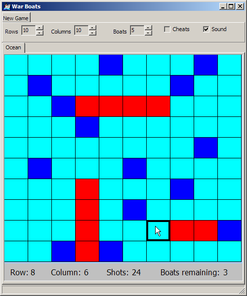

Note: If you had no problems with the previous assignment, then this a trivial
assignment. All you are doing is putting everything into a class. (Much like you're
doing for the lab).
Also, you will receive feedback on the first assignment (in your returned folders soon),
so you will want to check that so you don't lose the same points twice.
Information
|
Observations: Many students are forgetting that arrays in C/C++ are zero-based, meaning, if
you have an array of 5 boats, you'd better only index that array with 0 through 4. Students are indexing that array using the
BoatID (1 through 5), which is the cause of 99.9% of the problems. Remember, overwriting an array means your program is undefined (broken), which
(unfortunately) usually means it will work for you on your machine with simple tests, but won't work for me when I test it. The same is true
when doing bounds-checking to see if the boat or shot is outside of the array (ocean).
So, please, please, please pay attention to the
details when indexing an array.
|
GNU:g++ -Wall -Wextra -Werror -O -ansi -pedantic -Wconversion -o gnu driver-sample.cpp Ocean.cpp PRNG.cpp
Additional Sample Program Runs
Be sure that you test your code with this driver as well, especially the 8x12 board. YOU HAVE BEEN WARNED.
GUI Driver
After completing this assignment, you will have the "logic" to create a simple game like this one.Download the executable No installation necessary. Just copy to your hard drive and run it.
